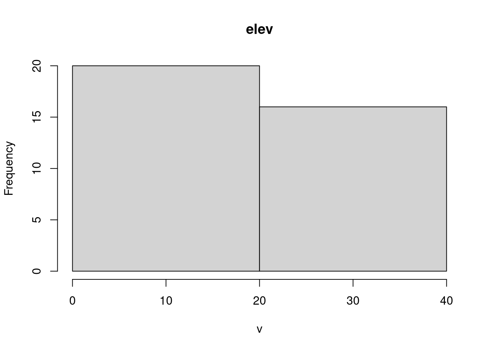

Con los objetos sf también se pueden utilizar los métodos de tidyverse para data.frame, tbl_df y tbl. De este modo, sf permite explotar las capacidades de análisis de datos de R en los datos geográficos, tanto si se utilizan las funciones básicas de R como las de tidyverse para el análisis de datos.
class(world)
[1] "sf" "tbl_df" "tbl" "data.frame"
dim(world)
[1] 177 11
La función st_drop_geometry() conserva únicamente los atributos de un objeto sf, es decir, elimina su geometría.
world_df =st_drop_geometry(world)class(world_df)
[1] "tbl_df" "tbl" "data.frame"
ncol(world_df)
[1] 10
Para muchas aplicaciones, el paquete tidyverse dplyr ofrece un enfoque eficaz para trabajar con los data frames. La compatibilidad con tidyverse es una ventaja de sf.
Subdivisión de vectores vía sus atributos
Los métodos de subdivisión básicos de R incluyen el operador [ y la función subset(), mientras que en el paquete dplyr, éstas son son filter() y slice() para filas, y select() para columnas. Ambos métodos conservan los componentes espaciales de los datos en los objetos sf, mientras que si se utiliza el operador $ o la función dplyr pull() para devolver una única columna de atributos como vector, se perderán los datos geométricos.
world[1:6, ] # subset rows by positionworld[, 1:3] # subset columns by positionworld[1:6, 1:3] # subset rows and columns by positionworld[, c("name_long", "pop")] # columns by nameworld[, c(T, T, F, F, F, F, F, T, T, F, F)] # by logical indicesworld[, 888] # an index representing a non-existent column
Podemos usar vectores lógicos para seleccionar subconjuntos de datos:
i_small = world$area_km2 <10000summary(i_small) # a logical vector
Mode FALSE TRUE
logical 170 7
small_countries = world[i_small, ]
o más sencillamente:
small_countries = world[world$area_km2 <10000, ]
La función subset() nos permite realizar la misma operación:
small_countries =subset(world, area_km2 <10000)
Las funciones de R base son maduras, estables y ampliamente utilizadas, lo que las convierte en una opción sólida, especialmente en contextos en los que la reproducibilidad y la fiabilidad son fundamentales. Las funciones de dplyr por su parte permiten flujos de trabajo “ordenados” o tidy que algunas personas consideran intuitivos y productivos para el análisis interactivo de datos. A continuación se muestran las funciones clave para hacer subset de data.frames con funciones dplyr.
# all columns between name_long and pop (inclusive)world2 =select(world, name_long:pop)
- operator
# all columns except subregion and area_km2 (inclusive)world3 =select(world, -subregion, -area_km2)
select(): subset and rename
world4 =select(world, name_long, population = pop)
select() también funciona con “funciones de ayuda” para operaciones de subset más avanzadas, como contains(), starts_with() y num_range().
La mayoría de los verbos dplyr devuelven un data.frame, pero también se puede extraer una sola columna como un vector con pull(). Se puede obtener el mismo resultado en R base con los operadores $ y [[, los tres comandos siguientes devuelven el mismo vector numérico:
pull(world, pop)world$popworld[["pop"]]
slice() es el equivalente en filas de select(). El siguiente fragmento de código, por ejemplo, selecciona las filas 1 a 6:
slice(world, 1:6)
iso_a2
name_long
continent
region_un
subregion
type
area_km2
pop
lifeExp
gdpPercap
geom
FJ
Fiji
Oceania
Oceania
Melanesia
Sovereign country
19289.97
885806
69.96000
8222.254
MULTIPOLYGON (((-180 -16.55…
TZ
Tanzania
Africa
Africa
Eastern Africa
Sovereign country
932745.79
52234869
64.16300
2402.099
MULTIPOLYGON (((33.90371 -0…
EH
Western Sahara
Africa
Africa
Northern Africa
Indeterminate
96270.60
NA
NA
NA
MULTIPOLYGON (((-8.66559 27…
CA
Canada
North America
Americas
Northern America
Sovereign country
10036042.98
35535348
81.95305
43079.143
MULTIPOLYGON (((-132.71 54….
US
United States
North America
Americas
Northern America
Country
9510743.74
318622525
78.84146
51921.985
MULTIPOLYGON (((-171.7317 6…
KZ
Kazakhstan
Asia
Asia
Central Asia
Sovereign country
2729810.51
17288285
71.62000
23587.338
MULTIPOLYGON (((87.35997 49…
filter() es el equivalente de dplyr a la función subset() de R base. Mantiene sólo las filas que coinciden con los criterios dados, por ejemplo, sólo los países con un área por debajo de un cierto umbral, o con un alto promedio de esperanza de vida:
world7 =filter(world, area_km2 <10000) # countries with a small areaworld7 =filter(world, lifeExp >82) # with high life expectancy
La clave de los flujos de trabajo que utilizan funciones dplyr es el operador ‘pipe’%>% (o desde R 4.1.0 la tubería nativa |>), que toma su nombre del pipe de Unix |. Los pipes permiten un código expresivo: la salida de una función se convierte en el primer argumento de la siguiente función, permitiendo el encadenamiento. Esto se ilustra a continuación donde sólo se filtran los países de Asia del conjunto de datos world, a continuación el objeto se subdivide por columnas (nombre_largo y continente) y se extraen las cinco primeras filas.
world7 = world |>filter(continent =="Asia") |>select(name_long, continent) |>slice(1:5)
Lo de arriba puede también expresarse como funciones anidadas, aunque es más difícil de leer:
La agregación consiste en resumir los datos con una o varias “variables de agrupación”, normalmente a partir de columnas de la tabla de datos que se desea agregar. Un ejemplo de agregación de atributos es calcular el número de personas por continente a partir de datos a nivel de país (una fila por país). El conjunto de datos world contiene los ingredientes necesarios: las columnas pop y continent, la población y la variable de agrupación, respectivamente. El objetivo es hallar la sum() de las poblaciones de los países para cada continente, lo que da como resultado un data.frame más pequeño. Esto se puede hacer con la función base de R aggregate() de la siguiente manera:
world_agg1 =aggregate(pop ~ continent, FUN = sum, data = world, na.rm =TRUE)class(world_agg1)
[1] "data.frame"
head(world_agg1)
continent
pop
Africa
1154946633
Asia
4311408059
Europe
669036256
North America
565028684
Oceania
37757833
South America
412060811
aggregate() es una función genérica lo que significa que se comporta de forma diferente dependiendo de sus entradas. sf proporciona el método aggregate.sf() que se activa automáticamente cuando x es un objeto sf y se proporciona un argumento by:
world_agg2 =aggregate(world["pop"], list(world$continent), FUN = sum, na.rm =TRUE)class(world_agg2)
[1] "sf" "data.frame"
nrow(world_agg2)
[1] 8
El objeto resultante world_agg2 es un objeto espacial que contiene 8 características que representan los continentes del mundo.
La función group_by() |> summarize() es el equivalente dplyr de aggregate(), con el nombre de la variable proporcionada en la función group_by() especificando la variable de agrupación y la información sobre lo que se va a resumir pasada a la función summarize(), como se muestra a continuación:
world_agg3 = world |>group_by(continent) |>summarize(pop =sum(pop, na.rm =TRUE))
Este enfoque puede parecer más complejo, pero tiene ventajas: flexibilidad, legibilidad y control sobre los nuevos nombres de las columnas. Esta flexibilidad se ilustra en el comando siguiente, que calcula no sólo la población, sino también la superficie y el número de países de cada continente:
world_agg4 = world |>group_by(continent) |>summarize(Pop =sum(pop, na.rm =TRUE), Area =sum(area_km2), N =n())
En el trozo de código anterior Pop, Area y N son nombres de columnas en el resultado, y sum() y n() las funciones de agregación. Estas funciones de agregación devuelven objetos sf con filas que representan continentes y geometrías que contienen los múltiples polígonos que representan cada masa de tierra y las islas asociadas (esto funciona gracias a la operación geométrica union, como se explica más abajo.
Combinemos lo que hemos aprendido hasta ahora sobre las funciones dplyr, encadenando múltiples comandos para resumir datos de atributos sobre países de todo el mundo por continentes. El siguiente comando calcula la densidad de población (con mutate()), ordena los continentes por el número de países que contienen (con dplyr::arrange()), y mantiene sólo los 3 continentes más poblados (con dplyr::slice_max()):
world_agg5 = world |>st_drop_geometry() |># drop the geometry for speedselect(pop, continent, area_km2) |># subset the columns of interest group_by(continent) |># group by continent and summarize:summarize(Pop =sum(pop, na.rm =TRUE), Area =sum(area_km2), N =n()) |>mutate(Density =round(Pop / Area)) |># calculate population densityslice_max(Pop, n =3) |># keep only the top 3arrange(desc(N)) # arrange in order of n. countries
options(scipen =999)knitr::kable( world_agg5,caption ="The top 3 most populous continents ordered by number of countries.",caption.short ="Top 3 most populous continents.",booktabs =TRUE)
The top 3 most populous continents ordered by number of countries.
continent
Pop
Area
N
Density
Africa
1154946633
29946198
51
39
Asia
4311408059
31252459
47
138
Europe
669036256
23065219
39
29
Unión de atributos vectoriales
Combinar datos de distintas fuentes es una tarea habitual en la preparación de datos. Las uniones lo hacen combinando tablas basadas en una variable “clave” o key compartida. dplyr tiene múltiples funciones de unión, incluyendo left_join() y inner_join() — ver vignette("two-table") para una lista completa. Los nombres de estas funciones siguen las convenciones utilizadas en el lenguaje de bases de datos SQL; su uso para unir conjuntos de datos no espaciales a objetos sf es el objetivo de esta sección. Las funciones join de dplyr funcionan igual en data.frames y objetos sf, la única diferencia importante es la columna geometry. El resultado de las uniones de datos puede ser un objeto sf o un data.frame. El tipo más común de unión de atributos en datos espaciales toma un objeto sf como primer argumento y le añade columnas de un data.frame especificado como segundo argumento.
Para demostrar las uniones, combinaremos datos sobre la producción de café con el conjunto de datos world. Los datos sobre el café se encuentran en un data.frame denominado coffee_data del paquete spData. Tiene 3 columnas: name_long nombra las principales naciones productoras de café y coffee_production_2016 y coffee_production_2017 contienen valores estimados para la producción de café en bolsas de 60 kg en cada año. Un “left join”, que conserva el primer conjunto de datos, combina “world” con “coffee_data”:
world_coffee =left_join(world, coffee_data)
Joining with `by = join_by(name_long)`
class(world_coffee)
[1] "sf" "tbl_df" "tbl" "data.frame"
Dado que los conjuntos de datos de entrada comparten una “key” (name_long), la unión funcionó sin utilizar el argumento by (véase ?left_join para más detalles). El resultado es un objeto sf idéntico al objeto world original, pero con dos nuevas variables (con índices de columna 11 y 12) sobre la producción de café. Esto puede representarse como un mapa, tal y como se ilustra en la Figura (fig:coffeemap), generada con la función plot() que se muestra a continuación:
World coffee production (thousand 60-kg bags) by country, 2017. Source: International Coffee Organization.
Para que la unión funcione, se debe proporcionar una columna “key” en ambos conjuntos de datos. Por defecto, dplyr utiliza todas las variables con nombres coincidentes. En este caso, los objetos world_coffee y world contienen una variable llamada name_long, lo que explica el mensaje Joining withby = join_by(name_long)``. En la mayoría de los casos en los que los nombres de las variables no coinciden, hay dos opciones:
Cambiar el nombre de la variable clave en uno de los objetos para que coincidan.
Utilizar el argumento by para especificar las variables de unión.
Este último enfoque se demuestra a continuación en una versión renombrada de coffee_data:
Observe que se mantiene el nombre en el objeto original, lo que significa que world_coffee y el nuevo objeto world_coffee2 son idénticos. Otra característica del resultado es que tiene el mismo número de filas que el conjunto de datos original. Aunque sólo hay 47 filas de datos en coffee_data, los 177 registros de países se mantienen intactos en world_coffee y world_coffee2: A las filas del conjunto de datos original que no coinciden se les asignan valores NA para las nuevas variables de producción de café. ¿Qué ocurre si sólo queremos conservar los países que tienen una coincidencia en la variable key?
Observe que el resultado de inner_join() sólo tiene 45 filas frente a las 47 de coffee_data. ¿Qué ha pasado con las filas restantes? Podemos identificar las filas que no coinciden utilizando la función setdiff() de la siguiente manera:
setdiff(coffee_data$name_long, world$name_long)
[1] "Congo, Dem. Rep. of" "Others"
El resultado muestra que Otros representa una fila que no está presente en el conjunto de datos world y que el nombre de la Democratic Republic of the Congo representa la otra: se ha abreviado, lo que hace que la unión no lo encuentre. El siguiente comando utiliza una función de concordancia de cadenas (regex) del paquete stringr para confirmar cuál debería ser Congo, Rep. Dem. of debería ser:
Para solucionar este problema, crearemos una nueva versión de coffee_data y actualizaremos el nombre. Si unimos el data.frame actualizado con inner_join(), obtendremos un resultado con las 46 naciones productoras de café:
También es posible unir en la otra dirección: empezar con un conjunto de datos no espaciales y añadir variables de un objeto sf. Esto se demuestra a continuación, se comienza con el objeto coffee_data y se añaden variables del conjunto de datos world. En contraste con las uniones anteriores, el resultado no es un sf, sino un data.frame en forma de tidyverse tibble: el resultado de una unión tiende a coincidir con su primer argumento:
coffee_world =left_join(coffee_data, world)
Joining with `by = join_by(name_long)`
class(coffee_world)
[1] "tbl_df" "tbl" "data.frame"
Note
En la mayoría de los casos, la columna de geometría sólo es útil en un objeto sf. La columna de geometría sólo se puede utilizar para crear mapas y operaciones espaciales si R “sabe” que es un objeto espacial, definido por un paquete espacial como sf. Afortunadamente, los marcos de datos no espaciales con una columna de lista de geometría (como coffee_world) pueden coaccionarse en un objeto sf de la siguiente manera: st_as_sf(coffee_world).
Creación de atributos y eliminación de información espacial
A menudo, nos gustaría crear una nueva columna basada en columnas ya existentes. Por ejemplo, queremos calcular la densidad de población de cada país. Para ello necesitamos dividir una columna de población, aquí pop, por una columna de área, aquí area_km2 con unidad de área en kilómetros cuadrados. Usando R base, podemos escribir:
world_new = world # do not overwrite our original dataworld_new$pop_dens = world_new$pop / world_new$area_km2
Alternativamente, podemos utilizar una de las funciones de dplyr - mutate() o transmute(). La función mutate() añade nuevas columnas en la penúltima posición del objeto sf (la última se reserva para la geometría):
world_new2 = world |>mutate(pop_dens = pop / area_km2)
La diferencia entre mutate() y transmute() es que esta última elimina todas las demás columnas existentes (excepto la columna de geometría).
La función unite() del paquete tidyr (que proporciona muchas funciones útiles para remodelar conjuntos de datos, incluida pivot_longer()) pega las columnas existentes. Por ejemplo, queremos combinar las columnas continent y region_un en una nueva columna llamada con_reg. Además, podemos definir un separador (aquí: dos puntos :) que define cómo deben unirse los valores de las columnas de entrada, y si deben eliminarse las columnas originales (aquí: TRUE):
world_unite = world |> tidyr::unite("con_reg", continent:region_un, sep =":", remove =TRUE)
El objeto sf resultante tiene una nueva columna llamada con_reg que representa el continente y la región de cada país, por ejemplo South America:Americas para Argentina y otros países de Sudamérica.
La función separate() de tidyr hace lo contrario que unite(): divide una columna en varias columnas utilizando una expresión regular o posiciones de caracteres.
Cada una de estas operaciones de datos de atributos conserva la geometría de las características simples. A veces tiene sentido eliminar la geometría, por ejemplo para acelerar la agregación. Hágalo con st_drop_geometry(), no manualmente con comandos como select(world, -geom), como se muestra a continuación.1
world_data = world |>st_drop_geometry()class(world_data)
[1] "tbl_df" "tbl" "data.frame"
Raster
A diferencia del modelo de datos vectoriales subyacente a sf (que representa puntos, líneas y polígonos como entidades discretas en el espacio), los datos ráster representan superficies continuas. Esta sección muestra cómo funcionan los objetos ráster creándolos desde cero con el paquete terra. Debido a su estructura única, la subdivisión o subset y otras operaciones en conjuntos de datos ráster funcionan de una manera diferente.
El siguiente código recrea el conjunto de datos ráster utilizado en el apartado anterior. Esto demuestra cómo funciona la función rast() para crear un raster de ejemplo llamado elev.
El resultado es un objeto raster con 6 filas y 6 columnas (especificadas por los argumentos nrow y ncol), y una extensión espacial mínima y máxima en dirección x e y (xmin, xmax, ymin, ymax). El argumento vals establece los valores que contiene cada celda.
Los objetos raster también pueden contener valores categóricos de la clase logical o variables factor:
El objeto ráster almacena la correspondiente tabla de consulta o “Raster Attribute Table” (RAT) como una lista de data.frames, que pueden visualizarse con cats(grain) (véase ?cats() para más información). Cada elemento de esta lista es una capa del raster. También es posible utilizar la función levels() para recuperar y añadir nuevos niveles de factor o sustituir los existentes:
Raster datasets with numeric (left) and categorical values (right).
Note
Los objetos ráster categóricos también pueden almacenar información sobre los colores asociados a cada valor utilizando una tabla de colores. La tabla de colores es un marco de datos con tres (rojo, verde, azul) o cuatro (alfa) columnas, donde cada fila se refiere a un valor. Las tablas de color en terra pueden verse o establecerse con la función coltab() (ver ?coltab). Es importante destacar que, al guardar un objeto ráster con una tabla de colores en un archivo (por ejemplo, GeoTIFF), también se guardará la información de color.
Raster subsetting
El subconjunto raster se realiza con el operador base de R [, que acepta una variedad de entradas:
Indexación fila-columna
ID de celda
Coordenadas
Otro objeto espacial
Aquí sólo mostramos las dos primeras opciones, ya que pueden considerarse operaciones no espaciales. Si necesitamos un objeto espacial para subdividir otro o la salida es un objeto espacial, nos referiremos a esto como subset espacial. Por lo tanto, estas dos últimas opciones se mostrarán en el próximo capítulo.
Las dos primeras opciones de subconjunto se muestran en los siguientes comandos — ambos devuelven el valor del píxel superior izquierdo en el objeto ráster elev:
# row 1, column 1elev[1, 1]# cell ID 1elev[1]
Subdividir objetos ráster multicapa devolverá los valores de las celdas de cada capa. Por ejemplo, two_layers = c(grain, elev); two_layers[1] devuelve un marco de datos con una fila y dos columnas — una para cada capa. Para extraer todos los valores o filas completas, también puede utilizar values().
Los valores de las celdas pueden modificarse sobrescribiendo los valores existentes junto con una operación de subconjunto. El siguiente fragmento de código, por ejemplo, establece la celda superior izquierda de elev a 0:
elev[1, 1] =0elev[]
Dejar los corchetes vacíos es una versión abreviada de values() para recuperar todos los valores de una capa. También se pueden modificar múltiples celdas de esta forma:
elev[1, c(1, 2)] =0
Resumen de objetos raster
terra contiene funciones para extraer estadísticas descriptivas de rásters enteros. Al imprimir un objeto raster en la consola escribiendo su nombre, se obtienen los valores mínimo y máximo de un raster.
summary() proporciona estadísticas descriptivas comunesindex{statistics} – mínimo, máximo, cuartiles y número de NAs para rásters continuos y un número de celdas de cada clase para rásters categóricos.
Otras operaciones de resumen, como la desviación estándar (véase más adelante) o estadísticas de resumen personalizadas, pueden calcularse con global().
global(elev, sd)
Note
If you provide the summary() and global() functions with a multi-layered raster object, they will summarize each layer separately, as can be illustrated by running: summary(c(elev, grain)).
Además, la función freq() permite obtener la tabla de frecuencias de valores categóricos.
Las estadísticas de valores raster pueden visualizarse de varias formas. Funciones específicas como boxplot(), density(), hist() y pairs() funcionan también con objetos raster, como se demuestra en el histograma creado con el comando siguiente (no mostrado):
hist(elev, breaks=2)

Footnotes
st_geometry(world_st) = NULL también funciona para eliminar la geometría de world, pero sobrescribe el objeto original.↩︎